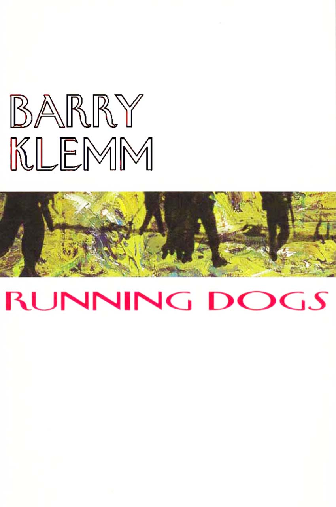

 Running DogsBarry Klemm a terrible and powerful reading experience bold savage writing that grips us by the throat, thrusts us into the horrors of war and never lets us go Debra Adelaide, The Sydney Morning Herald Shudder, and feel lucky that you’re reading it and not living it Ivy Fleming, The Examiner |
| Down to Book Description Contents Book Sample |
Down to Launch Speech by John Bryson |
Klemm biography | Next
title Previous title Home page All publications |
|||
Running Dogs was serialized in ten parts on
Radio National from Anzac Day (25 April) to 10 May 2005
Listen to the reading here ...
Episode 1
Episode 2
Episode 3
Episode 4
Episode 5
Episode 6
Episode 7
Episode 8
Episode 9
Episode 10
Episode 11
Episode 12
Book Description
Running
Dogs is a novel of Australians in the Vietnam War, told by
one
who was there. It tells the story behind why Post Traumatic Stress
Disorder, a condition politely known as ‘battle
fatigue’, was defined
only as a deep-seated psychological trauma after the Vietnam War. It
will open your eyes. It will tell you, surprisingly, of the camaraderie
of humans under extreme pressure. This is not preaching or ideology.
This is a drama that puts the reader in the midst of life and death
action.
We are plunged into the midst of an ambush. The attack is ruthlessly accomplished. But the jungle and pressure take their toll. With the narrator Yogi Griffin we are at the sharp end of the platoon’s life and death endeavour. Each incident is tense. A Buddhist monk dies in Yogi’s arms. Children are shot. The men begin to find their own actions unacceptable. Adopting the tactics of the Vietcong, they turn upon their officers in a frantic battle of wills. But by then their worst enemy has become themselves.
Both heart-rending and comic, Running Dogs is the coalface war the official histories do not tell. Barry Klemm served in 11 Platoon in Phouc Tuy Province, South Vietnam, during the time when the novel is set, between April 1967 and March 1968.
‘Not only can we now say that the enemy cannot win but we ourselves have won the war although it is not yet at an end.’
‘The Tet offensive has meant nothing less that defeat for the enemy.’
We are plunged into the midst of an ambush. The attack is ruthlessly accomplished. But the jungle and pressure take their toll. With the narrator Yogi Griffin we are at the sharp end of the platoon’s life and death endeavour. Each incident is tense. A Buddhist monk dies in Yogi’s arms. Children are shot. The men begin to find their own actions unacceptable. Adopting the tactics of the Vietcong, they turn upon their officers in a frantic battle of wills. But by then their worst enemy has become themselves.
Both heart-rending and comic, Running Dogs is the coalface war the official histories do not tell. Barry Klemm served in 11 Platoon in Phouc Tuy Province, South Vietnam, during the time when the novel is set, between April 1967 and March 1968.
‘Not only can we now say that the enemy cannot win but we ourselves have won the war although it is not yet at an end.’
General Westmoreland, US
Commander
in South Vietnam, April 1967
‘The Tet offensive has meant nothing less that defeat for the enemy.’
General Westmoreland,
March 1968
Klemm’s company tries
to survive with
laconic forbearance amid their Apocalypse Then.
In its determined unsentimentality, Running Dogs both moves and chills as it evokes life with a Catch-22 edginess where death is always imminent.
In its determined unsentimentality, Running Dogs both moves and chills as it evokes life with a Catch-22 edginess where death is always imminent.
Murray
Waldren, The Weekend
Australian
The
tenor of some of the last words of the novel (‘It was a
f------ fiasco,
wasn’t it’) recalls that of William
Nagle’s The
Odd Angry Shot,
the other veteran’s novel with which Running
Dogs
can fitly
stand guard.
Peter
Pierce, The Canberra
Times
ISBN 1876044314
13 DIGIT ISBN 9781876044312
Published 2000, Reprinted 2005
173 pgs
Running Dogs book sample
Back to top
River
of Gold
Hoa Long
Perfect Timing
Buddha’s Day Off
Riders on the Storm
Streetscene in Saigon
Turnover
Pumpkins
The Chi-Com Man’s Revenge
Rightful Places
The Delta Jack-up
Charlie on the Line
The Last Card Game
Back to top
Other Voices
Murray Waldren
The Weekend Australian, 9-10 December 2000
In the rush of historic revisions of Australia’s involvement in the Vietnam War, scant what-it-was-really-like attention has been paid to front-line fever. Barry Klemm’s Running Dogs helps amend that imbalance. Set largely in South Vietnam’s then Phouc Tuy Province in 1967-68, this slice-of-life account of ‘Pig’ Battalion is moodily energetic. And quickly engaging, with its colloquial, gallows-humoured toughness. Beset by hostile environments, antagonistic officers and logistical snafus, Klemm’s company tries to survive with laconic forbearance amid their Apocalypse Then. In its determined unsentimentality, Running Dogs both moves and chills as it evokes life with a Catch-22 edginess where death is always imminent. The fears, lunacies and chaos of guerilla war confrontations are especially vivid; also memorable is the self-protective, jugular camaraderie of the soldiers.
Back to top
Dogs of an ugly war
Ivy Fleming
The Examiner, 21 October 2000
There’s nothing pretty about Barry Klemm’s story of the Vietnam War in Running Dogs.
It’s a frank account of what the war was like - and who better to tell the story than an Australian Vietnam-veteran-turned-author.
The events in the book take place between April 1967 and March 1968 in Phoue Tuy province, South Vietnam.
The reader takes on the identity of Pte Griffin, or Yogi Bear. Because the reader is at the centre of the action, it gets very disturbing when faced with everything from shooting a group of armed Vietnamese kids to dealing with leeches in the swampy terrain.
And just when you think this bunch of soldiers can kill anything, there’s the incident where Yogi tries to save a Buddhist monk.
Running Dogs provides a picture of the Vietnam War in frank detail. However, it might be a bit more than some can stomach.
Although the story starts off ferociously (I had to force myself to continue despite the rough language and too-much-detail narrative) it does eventually ‘slow down’ as the soldiers come to grips with what they are doing.
Shudder, and feel lucky that you’re reading it and not living it.
Back to top
John Vile
The Sunday Tasmanian, 17 September 2000
Here is an account of the Vietnam War by an Aussie soldier who was there during one of the war’s peak periods, between April 1967 and March 1968.
Both tragic and comic, Running Dogs describes the coalface war that the official histories don’t tell.
Barry Klemm focuses on post-traumatic stress disorder, a condition once politely known as battle fatigue and defined as a deep-seated psychological malaise only after Vietnam.
In doing so, he has made a valuable contribution, even if it’s fictional, to the literature of the Vietnam War, which has left many veterans such a tragic legacy.
Back to top
In short new releases
Debra Adelaide
The Sydney Morning Herald, 16 September 2000
Klemm has drawn on his own experiences in the Vietnam war to write this novel, but there is nothing earnest or self-indulgent, preachy or even political in any of this - nothing but bold savage writing that grips us by the throat, thrusts us into the horrors of war and never lets us go. Written in the second voice, the narrative creates the disturbing illusion of becoming our own voice, echoing madly. Episodic chapters chart the gradual disintegration of a platoon, starting with a ruthless ambush of four civilians, and ending with the last card game before going home where ‘you didn’t have to carry a rifle everywhere you went’ but where the nightmares will remain forever. The tone is both cruel and comic, drenched with irony: ‘Maybe it was a massacre, maybe it was a great victory, maybe it was a trivial skirmish in which no-one got hurt. No-one could ever tell.’ It’s a terrible and powerful reading experience.
Back to top
Vietnam War revisited in veteran’s tale
Peter Pierce
The Canberra Times, 5 August 2000
As the volume of fiction of the Indo-Chinese Wars from the United States eased in the last decade, Australians - if in small numbers - are turning to those conflicts. Recent novels have included Christopher Koch’s Highways to a War (1995), Nigel Krauth’s Freedom Highway (1999) and, earlier this year, Peter Corris’s quickie, The Vietnam Volunteer. In addition, the stream of unit histories and memoirs continues steadily. The Official History under the editorship of Peter Edwards has been completed. It is becoming easier to see the contours and demolish the myths of Australian remembering, analysis and fabrication of the wars in which the country was involved in Southeast Asia, and especially in Viatnam.
The latest novel to appear, Barry Klemm’s Running Dogs, intriguingly and knowingly fixes the familiar with the unexpected. Klemm was a veteran, unlike the authors mentioned above, and indeed most Australian - if not American - novelists of the Vietnam War. The novel is set in Phuoc Tuy province, where Klemm served, from April 1967 to March 1968. He has therefore had a long time to meditate on his experiences of military life and - one guesses - to read critically in the fictions of Vietnam.
A sign of that is his recourse to a staple of such writing - the use of similes that edge towards cliche as they dream of domestic rather than war settings. Thus ambush victims have heads that look like watermelons split apart with an axe, another hapless enemy’s spilt brains resemble scrambled eggs. More resourcefully, Klemm finds ‘like a discordant song’ for the voices of yet unseen Vietnamese as Australians overhear them. He also disorders the standard narrative pattern of novels of the soldier’s tour of Vietnam. Instead of beginning with the introduction to members of the platoon, Klemm opens in the middle of an ambush. This is action typical, dangerous, yet unpredictable, as Klemm’s anti-hero Yogi Bear and his mates stand by ready to strike by a track that is ‘narrow and winding through the green shit’.
The pleasantries of telling us something of the platoon wait till the third chapter, by which time there has also been a botched, almost comic raid on a village whose people may be sympathetic to the Viet Cong. Then along they come, with their nicknames, supposed or rumoured home lives and their liabilities on display. There is Greyman, a part-Aboriginal conscript who does not know to which world he belongs; Sniffer Gibson, ‘a freckled lad from Tasmania whose affinity with machines was stronger than with men’; Alby Dunshea, ‘a flatout arse-hole’ who neither merits a nickname nor much sympathy when he is killed in action.
Yogi Bear goes through the familiar rites of passage - the first things of war - seeing an enemy corpse, suffering a wound, suffering the death of one of his own. The Viet Cong, the notional enemy, are glimpsed, respected, sometimes killed. The American allies, so often more despised than the VC in Australian novels of the war, are scarcely seen or heard in Running Dogs. Not that Yogi and his mates lack for enemies among such vain, dangerously incompetent representatives of the Australian officer class as ‘Hatrack’ (Major Haddon). The way in which others will tell of their war stories is also the object of soldiers’ weary contempt. Of a confused, frightening encounter, Yogi remarks that ‘maybe it was a massacre, maybe it was a great victory, maybe it was a trivial skirmish’. In any event, there is a painting ‘purporting to describe The Broken Hill Contact in the Canberra War Museum (sic)’.
Running Dogs is a superior combat narrative to most of its Australian predecessors. It is not free from banality (‘This is a bloody war, Yogi, not a Sunday school picnic’), nor from incipiently and not altogether plausible anti-war comments: ‘This relocating populations, burning farms, destroying crops. It’s the way the bad guys carry on.’ Our guys do not pretend to be good. Yogi’s tour ends in disillusionment. The tenor of some of the last words of the novel (‘It was a f------ fiasco, wasn’t it’) recalls that of William Nagle’s The Odd Angry Shot, the other veteran’s novel with which Running Dogs can fitly stand guard.
Back to top
Debut
Mike Shuttleworth
The Sunday Age, 23 July 2000
Private ‘Yogi Bear’ Griffin is a conscript fighting in the jungles of Vietnam. Klemm’s story is life-and-death stuff and while he’s particularly good at relaying the mechanics of warfare he exposes the frailties and fears of a soldier. It’s as though the reader sits at Griffin’s shoulder as he stalks the jungles and villages, listening to his innermost thoughts. Klemm, who served in Vietnam, does not preach or judge; he has refined his story to the essentials. It’s classic Australian realism. The language is as you would expect, loaded with bitter oaths, but the writing is tightly controlled and poignant. Black Pepper has something good on their hands with Klemm’s debut novel.
Back to top
For Those In the Know
Duncan Richardson
Social Alternatives, Vol. 20 No. 1, January 2001
Barry Klemm provides a convincingly stark portrait of what it could be like to find yourself fighting in a strange, far off land against a formidable, elusive enemy, with companions not of your choosing and officers whom you don’t trust. Anyone wanting an insight into the experience of the Australian infantry soldier in Vietnam could do worse than read Running Dogs yet it would only be necessary to dip into the narrative. Part of the problem with this book as a novel is the determination with which Klemm reproduces the repetitive boredom of war, punctuated by flashes of terror, in chapter after chapter.
The book is episodic, charting the disillusionment of the men in one small group engaged in searching out the Vietcong on their own territory. The Vietnamese emerge as tough, inscrutable, hardly human at times, which no doubt mirrors the views of some Australian troops at the time but one of the failings of the book is that the narrative docs not go beyond this perspective. Using a second person point of view doesn’t help this and gives the effect of an amnesia victim being filled in on what happened to him. The soldiers remain nicknames with one or two character traits and the jumps in chronology are not handled smoothly.
There is also a wealth of specialised terms used by forces in Vietnam, that are not explained as if this is a book for those in-the-know.This is a pity because many readers will miss the important underlying messages about a key event in our history as this novel is unlikely to attract interest beyond those fascinated by the ‘face of battle’.
Back to top
John Bryson (author)
The Great Northern Hotel, 22 July 2000
Before I’d read Running Dogs I’d heard others say it is a novel to be read in a sitting, and I’d understood they weren’t speaking about a word count here, but about its narrative strength. And I’d already been told, by Fran [Bryson] in fact, that ‘Barry can really write stories like this,’ by which she meant not only scripts. So I said, ‘We’ll see.’ And when Running Dogs was delivered to me I was told not only to read it, but also that I was to launch it.
It follows that I am expected to speak well of it, and I am happy not only to do that, as it turns out, but to do better. Running Dogs is an important book.
Revisiting the Vietnam War is not an easy task for a writer, not easy for a reader either. By and large we hate it. So the marketing of Running Dogs will be tricky, but maybe aided at the present time by the fact that we are allowed to hate it. Barry won’t be surprised to hear me say that, at the time he was under fire, I was sitting on the roadway in Bourke street, among tens of thousands of other protesters.
So here’s a first achievement of this novel. We know that Barry, and the others in his section, were hating it too, but without the option of sitting down in full view of their enemies.
They took rebellious action of their own, and the episodes about this in his book are for the most part comic, but over a very serious base, because the spontaneous insubordination could never be allowed to be subversive of the paramount need to keep each other alive.
Running Dogs is in the tradition of Michael Herr’s book and of Joseph Heller’s. And it joins them. In the comparisons, it seems to me more affecting than Catch 22, and emotionally more complete than Dispatches. And here’s another strength: Running Dogs uses a cultural tone which allows criticism of wars of invasion. I suspect this wouldn’t be so readily permitted in the USA.
Joseph Heller is much admired for creating the term ‘Catch 22.’ I’ve thought rather that he should be credited with purloining the concept we used to call ‘Dilemma,’ and better marketing his own product. But, just as Catch 22 is about all feasible options being cunningly closed off, I believe Running Dogs is about this sentence, attributed to Skull Braddock:
Within the writing of this novel, and I won’t spend much time on style, that’s for every reader’s judgement, I did admire the use of delerium, where the wounded narrator Yogi drifts in and out of real happenings, to revisit the way events had come to this pass, and also the use of the 2nd person in place of the 1st, to replace the narrator with the reader, so that ‘you’ are the person doing this, and terribly affecting this device is, to give an example, when you are the soldier in battle who kills the children.
Running Dogs is about all those things, but I deeply believe every war story has at its core a sentiment like this paragraph:
This novel is Barry Klemm’s response to that problem. He hasn’t hurried too much with it, and I suspect this is not a task one can hurry.
He’s given us a very fine book, one which should be read and, sending it off on its journey now, we all wish it well.
Back to top
Hoa Long
Perfect Timing
Buddha’s Day Off
Riders on the Storm
Streetscene in Saigon
Turnover
Pumpkins
The Chi-Com Man’s Revenge
Rightful Places
The Delta Jack-up
Charlie on the Line
The Last Card Game
Back to top
Reviews
Other Voices
Murray Waldren
The Weekend Australian, 9-10 December 2000
In the rush of historic revisions of Australia’s involvement in the Vietnam War, scant what-it-was-really-like attention has been paid to front-line fever. Barry Klemm’s Running Dogs helps amend that imbalance. Set largely in South Vietnam’s then Phouc Tuy Province in 1967-68, this slice-of-life account of ‘Pig’ Battalion is moodily energetic. And quickly engaging, with its colloquial, gallows-humoured toughness. Beset by hostile environments, antagonistic officers and logistical snafus, Klemm’s company tries to survive with laconic forbearance amid their Apocalypse Then. In its determined unsentimentality, Running Dogs both moves and chills as it evokes life with a Catch-22 edginess where death is always imminent. The fears, lunacies and chaos of guerilla war confrontations are especially vivid; also memorable is the self-protective, jugular camaraderie of the soldiers.
Back to top
Dogs of an ugly war
Ivy Fleming
The Examiner, 21 October 2000
There’s nothing pretty about Barry Klemm’s story of the Vietnam War in Running Dogs.
It’s a frank account of what the war was like - and who better to tell the story than an Australian Vietnam-veteran-turned-author.
The events in the book take place between April 1967 and March 1968 in Phoue Tuy province, South Vietnam.
The reader takes on the identity of Pte Griffin, or Yogi Bear. Because the reader is at the centre of the action, it gets very disturbing when faced with everything from shooting a group of armed Vietnamese kids to dealing with leeches in the swampy terrain.
And just when you think this bunch of soldiers can kill anything, there’s the incident where Yogi tries to save a Buddhist monk.
Running Dogs provides a picture of the Vietnam War in frank detail. However, it might be a bit more than some can stomach.
Although the story starts off ferociously (I had to force myself to continue despite the rough language and too-much-detail narrative) it does eventually ‘slow down’ as the soldiers come to grips with what they are doing.
Shudder, and feel lucky that you’re reading it and not living it.
Back to top
John Vile
The Sunday Tasmanian, 17 September 2000
Here is an account of the Vietnam War by an Aussie soldier who was there during one of the war’s peak periods, between April 1967 and March 1968.
Both tragic and comic, Running Dogs describes the coalface war that the official histories don’t tell.
Barry Klemm focuses on post-traumatic stress disorder, a condition once politely known as battle fatigue and defined as a deep-seated psychological malaise only after Vietnam.
In doing so, he has made a valuable contribution, even if it’s fictional, to the literature of the Vietnam War, which has left many veterans such a tragic legacy.
Back to top
In short new releases
Debra Adelaide
The Sydney Morning Herald, 16 September 2000
Klemm has drawn on his own experiences in the Vietnam war to write this novel, but there is nothing earnest or self-indulgent, preachy or even political in any of this - nothing but bold savage writing that grips us by the throat, thrusts us into the horrors of war and never lets us go. Written in the second voice, the narrative creates the disturbing illusion of becoming our own voice, echoing madly. Episodic chapters chart the gradual disintegration of a platoon, starting with a ruthless ambush of four civilians, and ending with the last card game before going home where ‘you didn’t have to carry a rifle everywhere you went’ but where the nightmares will remain forever. The tone is both cruel and comic, drenched with irony: ‘Maybe it was a massacre, maybe it was a great victory, maybe it was a trivial skirmish in which no-one got hurt. No-one could ever tell.’ It’s a terrible and powerful reading experience.
Back to top
Vietnam War revisited in veteran’s tale
Peter Pierce
The Canberra Times, 5 August 2000
As the volume of fiction of the Indo-Chinese Wars from the United States eased in the last decade, Australians - if in small numbers - are turning to those conflicts. Recent novels have included Christopher Koch’s Highways to a War (1995), Nigel Krauth’s Freedom Highway (1999) and, earlier this year, Peter Corris’s quickie, The Vietnam Volunteer. In addition, the stream of unit histories and memoirs continues steadily. The Official History under the editorship of Peter Edwards has been completed. It is becoming easier to see the contours and demolish the myths of Australian remembering, analysis and fabrication of the wars in which the country was involved in Southeast Asia, and especially in Viatnam.
The latest novel to appear, Barry Klemm’s Running Dogs, intriguingly and knowingly fixes the familiar with the unexpected. Klemm was a veteran, unlike the authors mentioned above, and indeed most Australian - if not American - novelists of the Vietnam War. The novel is set in Phuoc Tuy province, where Klemm served, from April 1967 to March 1968. He has therefore had a long time to meditate on his experiences of military life and - one guesses - to read critically in the fictions of Vietnam.
A sign of that is his recourse to a staple of such writing - the use of similes that edge towards cliche as they dream of domestic rather than war settings. Thus ambush victims have heads that look like watermelons split apart with an axe, another hapless enemy’s spilt brains resemble scrambled eggs. More resourcefully, Klemm finds ‘like a discordant song’ for the voices of yet unseen Vietnamese as Australians overhear them. He also disorders the standard narrative pattern of novels of the soldier’s tour of Vietnam. Instead of beginning with the introduction to members of the platoon, Klemm opens in the middle of an ambush. This is action typical, dangerous, yet unpredictable, as Klemm’s anti-hero Yogi Bear and his mates stand by ready to strike by a track that is ‘narrow and winding through the green shit’.
The pleasantries of telling us something of the platoon wait till the third chapter, by which time there has also been a botched, almost comic raid on a village whose people may be sympathetic to the Viet Cong. Then along they come, with their nicknames, supposed or rumoured home lives and their liabilities on display. There is Greyman, a part-Aboriginal conscript who does not know to which world he belongs; Sniffer Gibson, ‘a freckled lad from Tasmania whose affinity with machines was stronger than with men’; Alby Dunshea, ‘a flatout arse-hole’ who neither merits a nickname nor much sympathy when he is killed in action.
Yogi Bear goes through the familiar rites of passage - the first things of war - seeing an enemy corpse, suffering a wound, suffering the death of one of his own. The Viet Cong, the notional enemy, are glimpsed, respected, sometimes killed. The American allies, so often more despised than the VC in Australian novels of the war, are scarcely seen or heard in Running Dogs. Not that Yogi and his mates lack for enemies among such vain, dangerously incompetent representatives of the Australian officer class as ‘Hatrack’ (Major Haddon). The way in which others will tell of their war stories is also the object of soldiers’ weary contempt. Of a confused, frightening encounter, Yogi remarks that ‘maybe it was a massacre, maybe it was a great victory, maybe it was a trivial skirmish’. In any event, there is a painting ‘purporting to describe The Broken Hill Contact in the Canberra War Museum (sic)’.
Running Dogs is a superior combat narrative to most of its Australian predecessors. It is not free from banality (‘This is a bloody war, Yogi, not a Sunday school picnic’), nor from incipiently and not altogether plausible anti-war comments: ‘This relocating populations, burning farms, destroying crops. It’s the way the bad guys carry on.’ Our guys do not pretend to be good. Yogi’s tour ends in disillusionment. The tenor of some of the last words of the novel (‘It was a f------ fiasco, wasn’t it’) recalls that of William Nagle’s The Odd Angry Shot, the other veteran’s novel with which Running Dogs can fitly stand guard.
Back to top
Debut
Mike Shuttleworth
The Sunday Age, 23 July 2000
Private ‘Yogi Bear’ Griffin is a conscript fighting in the jungles of Vietnam. Klemm’s story is life-and-death stuff and while he’s particularly good at relaying the mechanics of warfare he exposes the frailties and fears of a soldier. It’s as though the reader sits at Griffin’s shoulder as he stalks the jungles and villages, listening to his innermost thoughts. Klemm, who served in Vietnam, does not preach or judge; he has refined his story to the essentials. It’s classic Australian realism. The language is as you would expect, loaded with bitter oaths, but the writing is tightly controlled and poignant. Black Pepper has something good on their hands with Klemm’s debut novel.
Back to top
For Those In the Know
Duncan Richardson
Social Alternatives, Vol. 20 No. 1, January 2001
Barry Klemm provides a convincingly stark portrait of what it could be like to find yourself fighting in a strange, far off land against a formidable, elusive enemy, with companions not of your choosing and officers whom you don’t trust. Anyone wanting an insight into the experience of the Australian infantry soldier in Vietnam could do worse than read Running Dogs yet it would only be necessary to dip into the narrative. Part of the problem with this book as a novel is the determination with which Klemm reproduces the repetitive boredom of war, punctuated by flashes of terror, in chapter after chapter.
The book is episodic, charting the disillusionment of the men in one small group engaged in searching out the Vietcong on their own territory. The Vietnamese emerge as tough, inscrutable, hardly human at times, which no doubt mirrors the views of some Australian troops at the time but one of the failings of the book is that the narrative docs not go beyond this perspective. Using a second person point of view doesn’t help this and gives the effect of an amnesia victim being filled in on what happened to him. The soldiers remain nicknames with one or two character traits and the jumps in chronology are not handled smoothly.
There is also a wealth of specialised terms used by forces in Vietnam, that are not explained as if this is a book for those in-the-know.This is a pity because many readers will miss the important underlying messages about a key event in our history as this novel is unlikely to attract interest beyond those fascinated by the ‘face of battle’.
Back to top
John Bryson (author)
The Great Northern Hotel, 22 July 2000
Before I’d read Running Dogs I’d heard others say it is a novel to be read in a sitting, and I’d understood they weren’t speaking about a word count here, but about its narrative strength. And I’d already been told, by Fran [Bryson] in fact, that ‘Barry can really write stories like this,’ by which she meant not only scripts. So I said, ‘We’ll see.’ And when Running Dogs was delivered to me I was told not only to read it, but also that I was to launch it.
It follows that I am expected to speak well of it, and I am happy not only to do that, as it turns out, but to do better. Running Dogs is an important book.
Revisiting the Vietnam War is not an easy task for a writer, not easy for a reader either. By and large we hate it. So the marketing of Running Dogs will be tricky, but maybe aided at the present time by the fact that we are allowed to hate it. Barry won’t be surprised to hear me say that, at the time he was under fire, I was sitting on the roadway in Bourke street, among tens of thousands of other protesters.
So here’s a first achievement of this novel. We know that Barry, and the others in his section, were hating it too, but without the option of sitting down in full view of their enemies.
They took rebellious action of their own, and the episodes about this in his book are for the most part comic, but over a very serious base, because the spontaneous insubordination could never be allowed to be subversive of the paramount need to keep each other alive.
Running Dogs is in the tradition of Michael Herr’s book and of Joseph Heller’s. And it joins them. In the comparisons, it seems to me more affecting than Catch 22, and emotionally more complete than Dispatches. And here’s another strength: Running Dogs uses a cultural tone which allows criticism of wars of invasion. I suspect this wouldn’t be so readily permitted in the USA.
Joseph Heller is much admired for creating the term ‘Catch 22.’ I’ve thought rather that he should be credited with purloining the concept we used to call ‘Dilemma,’ and better marketing his own product. But, just as Catch 22 is about all feasible options being cunningly closed off, I believe Running Dogs is about this sentence, attributed to Skull Braddock:
No
matter how bad things had got since the day you had entered the army,
they steadily got worse.
Within the writing of this novel, and I won’t spend much time on style, that’s for every reader’s judgement, I did admire the use of delerium, where the wounded narrator Yogi drifts in and out of real happenings, to revisit the way events had come to this pass, and also the use of the 2nd person in place of the 1st, to replace the narrator with the reader, so that ‘you’ are the person doing this, and terribly affecting this device is, to give an example, when you are the soldier in battle who kills the children.
Running Dogs is about all those things, but I deeply believe every war story has at its core a sentiment like this paragraph:
What
could you say to them, when you got home. How could you explain how it
was? Could you really, in a pleasant suburban lounge room or the pub in
Queen Street near the insurance office, tell any of them of what you
did? How could you give it a context by means of which they could
understand? Tell them you were a primitive predator, good only at
ambushes except usually you rucked it up. Tell them about fragging and
not fragging? Tell them about dead children and friendly fire? What
could you say that they would understand?
Tell them a funny story maybe.
Tell them a funny story maybe.
This novel is Barry Klemm’s response to that problem. He hasn’t hurried too much with it, and I suspect this is not a task one can hurry.
He’s given us a very fine book, one which should be read and, sending it off on its journey now, we all wish it well.
Back to top
Home page
blackpepperpublishing.com